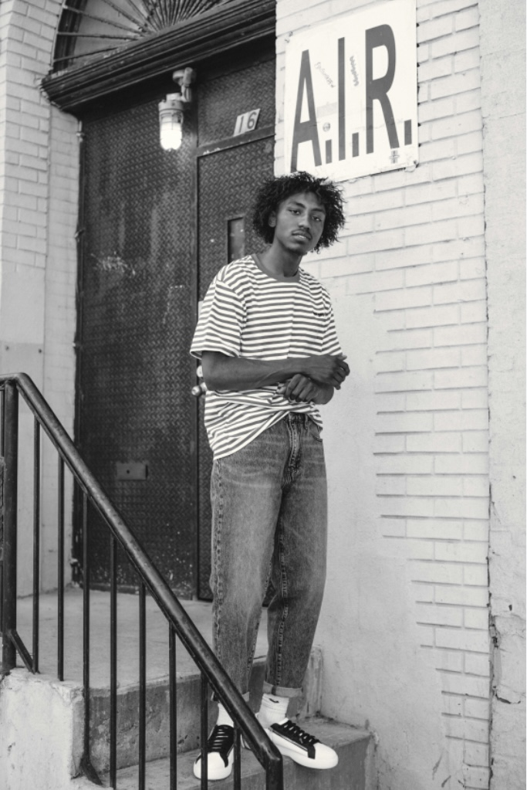
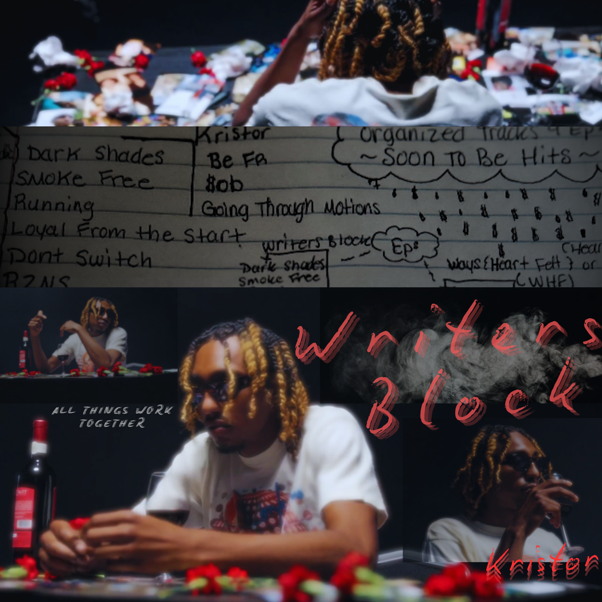

As an early bird person. I usually start my days waking up before the crack of dawn. It tends to usually have something for me to process. As in a certain way of thinking to reach, which I do by usually challenging my mind in such ways as exercise, prayer, reading, and solitude for mental clarity. I am a bit of a picky eater. But 1 to 2 meals a day should do the job for the most of the time. I don't usually drink anything but water. So as long as I have access to it, I am fine. I do like my space throughout the day here and there to make through. By any means necessary do I need a nap if I were to get overstimulated at any point. I do love to work on music as I also have my own studio. When it comes down to my time, this is still a priority for me after my list for the day is knocked out.
Though I'd usually identify as an intro-extrovert, I am pretty open and available as a person. Depending on the relationship status, if you do have my number, preferably, I'd like to be reached out through text first, and if no answer, then phone call. I don't mind answering the phone most of the time; I just like to be forewarned prior to the conversation. If I'm not busy, then of course, feel free to contact. Outside of the phone, I am available via email, WhatsApp, or social media. Rarely in person unless already accepted request.
Being fully authentic as your person. Embracing you and mastering levels of solitude. Understanding more of yourself, loving all your flaws. I also am very humorous, so I love to bring people down to earth, making them feel good and have a good time while being the best or better version of themselves.
I have been working on my temperament my whole entire life. As I got older, I have learned to cope with my emotions and connect them to my drive. I understand that most of the time, I'm angry because of disappointment. However, there are always things to set off your trigger. Not enough rest, not enough food, and hydration. As a creative, I need to express myself as much as possible.
I usually give feedback only when recommended. But I'd like to give feedback to people who wanted it from me first. Only when a person is receptive.
I like to converse or do it in person if anything; I can read body language and mannerisms.
To grow spiritually, physically, and naturally into one of the best versions of myself. Excel in my coding position as well as my music career.
Music, Basketball, Technology, Relationships, Aspirations, Desires, Nostalgia, Reminisce
